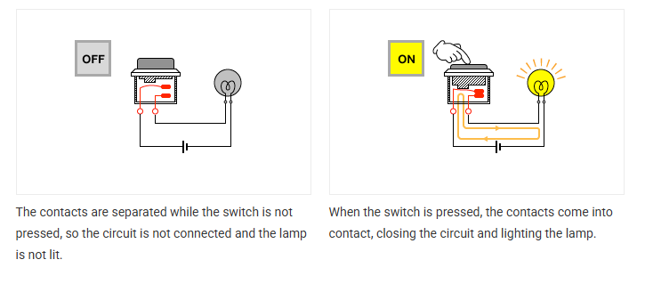

Sinking and Sourcing Concept
In PLC systems, sinking and sourcing describe how current flows between field devices and PLC input/output modules. Understanding this concept is essential for proper wiring and safe operation.
Basic Current Flow Concept
- Conventional current flows from positive (+) to negative (-).
- The terms sinking and sourcing describe which device provides (+) or receives (-) current.
- Sinking Input / Output:
- Sinking Input:
- A sinking input module provides a path to 0V (negative).
- The field device supplies positive voltage (+24V DC) to the PLC input.
- Current flows from field device to PLC input.
- Example:
- PNP-type sensors are used with sinking input modules.
- Sinking Output:
- A sinking output module switches the negative (-) side of the load.
- The load is connected to +24V DC.
- When ON, current flows from the load into the PLC output.
- Also called:
- NPN output.
- Sinking Input:
- Sourcing Input / Output:
- Sourcing Input:
- A sourcing input module supplies +24V DC to the input device.
- The field device provides the path to 0V (negative).
- Current flows from PLC input to field device.
- Example:
- NPN-type sensors are used with sourcing input modules.
- Sourcing Output:
- A sourcing output module switches the positive (+) side of the load.
- The load is connected to 0V (negative).
- When ON, current flows from PLC output to the load.
- Also called:
- PNP output.
- Sourcing Input: